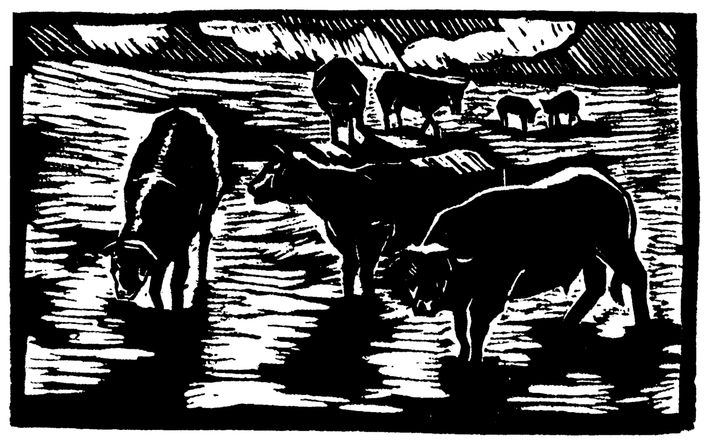
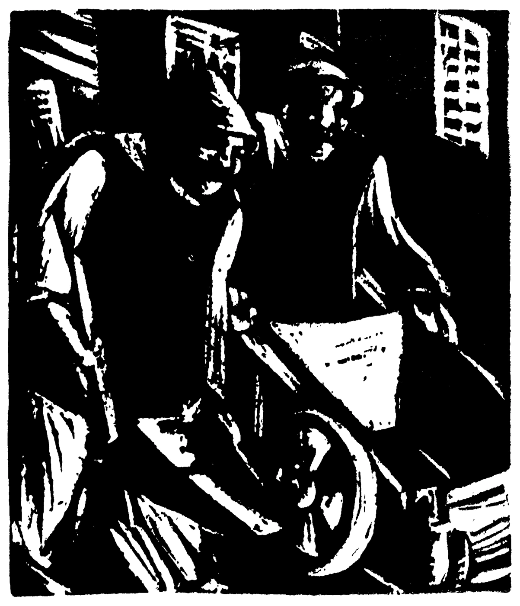
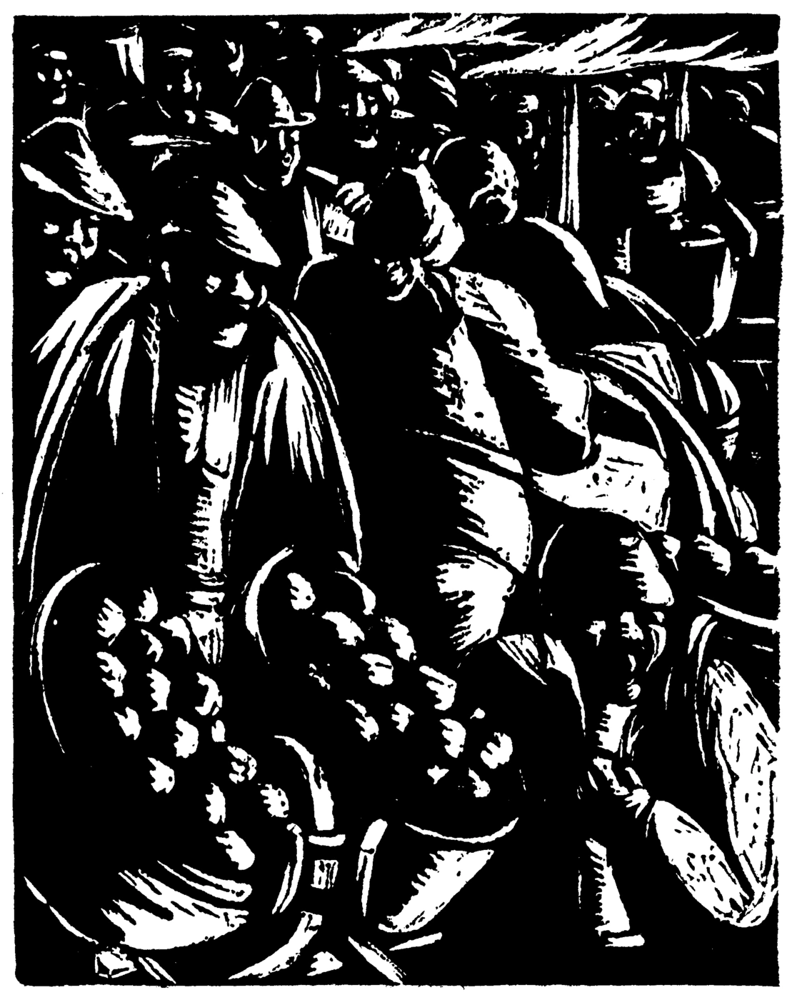
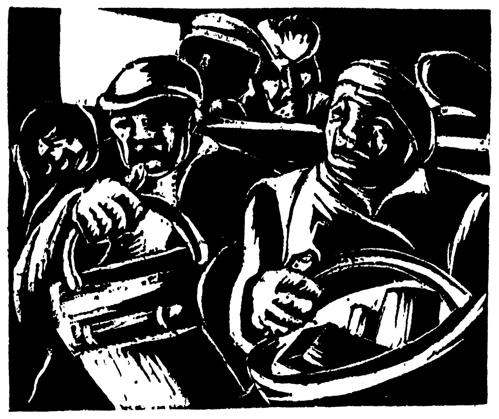

見るポイント
いちばん近い牛と、奥にいる牛の大きさを比べてみてください。牛の体の黒を大きく残し、地面には白い横線を刻むことで、草地の広さを表しています。
本文・作品図録公開（実作品画像4点） · 2026-11-22
社会・文化的な版画運動（木版技法そのものとは区別）
中国新興木刻運動
木の板をほり、残した所に色をつけて、紙に絵を写します。
中国では、こうした絵で、社会の争いや人々の苦しみを伝える人たちがいました。
1930年代には、つくり方を学ぶ会を開いたり、本や新聞に作品をのせたりしました。
黒い所と白い所の分け方も、伝え方の手がかりになります。
実作品を見る

画像を表示できませんでした。下の出典ページで確認できます。
何白濤（He Baitao） / 1933年刊（制作は同年以前）
白黒木版画（1933年の選集に印刷された図版） ／ 掲載本は上海図書館蔵（蔵書印あり）。中国国家図書館の民国図書データベース収録。
いちばん近い牛と、奥にいる牛の大きさを比べてみてください。牛の体の黒を大きく残し、地面には白い横線を刻むことで、草地の広さを表しています。
初期を代表する作例。葉霊鳳が上海の木刻家に作品を求め、新しい中国木刻を紹介するために選んだ8点のうち、3番目に掲載した農村風景です。
何白濤（He Baitao）／上海・現代雑誌社編『現代中國木刻選』第3図。上海図書館蔵本、中国国家図書館デジタル資料。撮影者の記載なし。
出典で作品・資料を見る ↗原作品は保護期間満了。1933年刊の平面印刷物をスキャンした図版。
何白濤は1939年没。中国の当時の著作権法21条による死後50年は1989年末で満了。上海の1933年刊行本に米国の著作権表示は見られず、米国での回復の基準日である1996年1月1日より前に本国で保護期間が満了。
平面の木版画を収めた1933年刊行本を正面からスキャンした白黒画像。公開ファイルから作品の版面と周囲の余白を抜き出しました。
1933年刊行本の印刷を伝える資料です。原版の材質やインクの実際の色はこの白黒画像では確かめられません。
作品・図版の関連資料 ↗画像の利用条件 ↗画面表示用に大きさを調整しています。
実作品を見る

画像を表示できませんでした。下の出典ページで確認できます。
夏朋（Xia Peng） / 1933年刊（制作は同年以前）
白黒木版画（1933年の選集に印刷された図版） ／ 掲載本は上海図書館蔵（蔵書印あり）。中国国家図書館の民国図書データベース収録。
人の袖から手押し車の車輪へ、白い線を目でたどってみてください。背景をほとんど黒く残しているので、働く二人の手元がよく見えます。
初期を代表する作例。1933年の選集の第6図。魯迅もこの作品を収集し、近代版画研究者の李允経が『魯迅蔵画欣賞』で取り上げました。
夏朋（Xia Peng）／上海・現代雑誌社編『現代中國木刻選』第6図。上海図書館蔵本、中国国家図書館デジタル資料。撮影者の記載なし。
出典で作品・資料を見る ↗原作品は保護期間満了。1933年刊の平面印刷物をスキャンした図版。
夏朋は1935年没。中国の当時の著作権法21条による死後50年は1985年末で満了。上海の1933年刊行本に米国の著作権表示は見られず、米国での回復の基準日である1996年1月1日より前に本国で保護期間が満了。
平面の木版画を収めた1933年刊行本を正面からスキャンした白黒画像。公開ファイルから作品の版面と周囲の余白を抜き出しました。
1933年刊行本の印刷を伝える資料です。原版の材質やインクの実際の色はこの白黒画像では確かめられません。
作品・図版の関連資料 ↗画像の利用条件 ↗画面表示用に大きさを調整しています。
実作品を見る

画像を表示できませんでした。下の出典ページで確認できます。
夏朋（Xia Peng） / 1933年刊（制作は同年以前）
白黒木版画（1933年の選集に印刷された図版） ／ 掲載本は上海図書館蔵（蔵書印あり）。中国国家図書館の民国図書データベース収録。
画面下のかごから奥へ視線を移すと、肩、帽子、顔が次々に重なります。市場の建物を広く描かなくても、人でいっぱいの朝の様子が伝わります。
初期を代表する作例。葉霊鳳が上海の木刻家から選んだ8点の第7図です。道の掃除、朝市、車内を描いた夏朋の3作が続き、街で暮らす人を題材にした初期の木刻を伝えます。
夏朋（Xia Peng）／上海・現代雑誌社編『現代中國木刻選』第7図。上海図書館蔵本、中国国家図書館デジタル資料。撮影者の記載なし。
出典で作品・資料を見る ↗原作品は保護期間満了。1933年刊の平面印刷物をスキャンした図版。
夏朋は1935年没。中国の当時の著作権法21条による死後50年は1985年末で満了。上海の1933年刊行本に米国の著作権表示は見られず、米国での回復の基準日である1996年1月1日より前に本国で保護期間が満了。
平面の木版画を収めた1933年刊行本を正面からスキャンした白黒画像。公開ファイルから作品の版面と周囲の余白を抜き出しました。
1933年刊行本の印刷を伝える資料です。原版の材質やインクの実際の色はこの白黒画像では確かめられません。
作品・図版の関連資料 ↗画像の利用条件 ↗画面表示用に大きさを調整しています。
実作品を見る

画像を表示できませんでした。下の出典ページで確認できます。
夏朋（Xia Peng） / 1933年刊（制作は同年以前）
白黒木版画（1933年の選集に印刷された図版） ／ 掲載本は上海図書館蔵（蔵書印あり）。中国国家図書館の民国図書データベース収録。
手前の二人を見比べてください。帽子の傾き、目もと、丸く曲がった指が一人ずつ違います。奥の席にいる人を小さく重ねて、狭い車内に奥行きを出しています。
初期を代表する作例。選集の最後を飾る第8図で、当時の出版物がどのような街の場面を読者に届けようとしたかを示します。原題は図録の目次と図版下に従いました。
夏朋（Xia Peng）／上海・現代雑誌社編『現代中國木刻選』第8図。上海図書館蔵本、中国国家図書館デジタル資料。撮影者の記載なし。
出典で作品・資料を見る ↗原作品は保護期間満了。1933年刊の平面印刷物をスキャンした図版。
夏朋は1935年没。中国の当時の著作権法21条による死後50年は1985年末で満了。上海の1933年刊行本に米国の著作権表示は見られず、米国での回復の基準日である1996年1月1日より前に本国で保護期間が満了。
平面の木版画を収めた1933年刊行本を正面からスキャンした白黒画像。公開ファイルから作品の版面と周囲の余白を抜き出しました。
1933年刊行本の印刷を伝える資料です。原版の材質やインクの実際の色はこの白黒画像では確かめられません。
作品・図版の関連資料 ↗画像の利用条件 ↗画面表示用に大きさを調整しています。
作品の知名度や画像の入手しやすさだけで選びません。紹介したい作品と、調べて分かったことをまとめました。画像を載せられるかどうかは、別に確かめています。画像の利用許諾を確認できていないものは掲載していません。
風景や働く人々を描いた木刻と、都市での抗議や魯迅（ろじん）の記憶を扱う作品を紹介します。同じ時代の版画でも、誰の生活をどう見せるかによって、線の彫り方と黒い面の使い方が変わります。
デモをする人々への暴力を描いた作品です。
大きな黒い所と、斜めに走る形を使っています。
一人を大きく描く絵とは違う、集団の出来事の伝え方です。
黒白木刻・抗議の場面
中国美術館は、デモをする群衆への暴力を描いた作品と説明しています。大きな黒い面、斜めに走る構図、簡潔な彫り方が、対抗する力を強めるとしています。李樺（りか）の一人の人物による象徴表現と比べて、集団の出来事をどう組み立てるかを見ます。
個別の記録と、館の別の記事では寸法が違います。画像を使う前に、絵の部分と紙全体の範囲、どの刷りかを照合します。《码头工人》とは別の作品です。争いや抵抗を表す一例なので、暮らしや農村を描く作品も追加で調べています。
白黒木版画（1933年の選集に印刷された図版）
いちばん近い牛と、奥にいる牛の大きさを比べてみてください。牛の体の黒を大きく残し、地面には白い横線を刻むことで、草地の広さを表しています。
作品・資料の出典を見る ↗原題：牛
何白濤（He Baitao） / 1933年刊（制作は同年以前） / 白黒木版画（1933年の選集に印刷された図版）
白黒木版画（1933年の選集に印刷された図版）
人の袖から手押し車の車輪へ、白い線を目でたどってみてください。背景をほとんど黒く残しているので、働く二人の手元がよく見えます。
作品・資料の出典を見る ↗原題：清道夫
夏朋（Xia Peng） / 1933年刊（制作は同年以前） / 白黒木版画（1933年の選集に印刷された図版）
白黒木版画（1933年の選集に印刷された図版）
画面下のかごから奥へ視線を移すと、肩、帽子、顔が次々に重なります。市場の建物を広く描かなくても、人でいっぱいの朝の様子が伝わります。
作品・資料の出典を見る ↗原題：早市
夏朋（Xia Peng） / 1933年刊（制作は同年以前） / 白黒木版画（1933年の選集に印刷された図版）
白黒木版画（1933年の選集に印刷された図版）
手前の二人を見比べてください。帽子の傾き、目もと、丸く曲がった指が一人ずつ違います。奥の席にいる人を小さく重ねて、狭い車内に奥行きを出しています。
作品・資料の出典を見る ↗原題：四等車箱
夏朋（Xia Peng） / 1933年刊（制作は同年以前） / 白黒木版画（1933年の選集に印刷された図版）
原題：怒吼吧，中国!（Roar, China!）
しばられ、目をおおわれた人を描いた絵です。
中国美術館は、押さえつける力と、それに立ち向かう力を表すと説明しています。
細い線と黒い所の分け方が、見る手がかりになります。
黒白木刻・政治的象徴
中国美術館は、縛られて目を覆われた人物を、人を押さえつける力と、それに抵抗する力の象徴として説明しています。光や影を写実的に再現するより、線を残して周りを彫る「陽刻（ようこく）」と、黒と白の差を生かしています。短く強い視覚表現で、社会への訴えを伝える例です。
館の記録では20 × 15 cmです。作品が1935年につくられたことと、掲載するものがいつ、どの状態で刷られたかは、別に確認します。政治的な象徴を表す一作です。運動全体の暮らしの描き方や地域ごとの違いは、別の候補で補います。
原題：At Lu Xun’s Funeral
作家のろじんの葬儀を扱った作品です。
最初につくられたものと、後につくり直したものを分けて考えます。
ここで調べた資料は、1936年当時に刷られたものではありません。
木版画・社会的記憶
魯迅（ろじん）をめぐる記憶と、木を彫って刷る木刻（もっこく）の表現を考える候補です。最初の案と、後からつくり直した作品を分けます。そのうえで、政治や社会とのつながりが、どこで続き、どこで変わったかを確かめます。
M+の記事に掲載されている資料は、1936年当時の刷りではありません。画像を実際に見ていないため、具体的な線や配置の分析は保留しています。
中国新興木刻（しんこうもっこく）運動は、木版画で社会へ訴えようとした表現の動きです。木版の技術を発明した運動ではなく、学び、出版し、展覧会を開く活動として見ます。中国美術館は、1930年代の木刻を社会や政治の現実と関わるものと説明しています。誰に何を伝えようとしたのでしょう。作品の主張と、美術館が後の時代に示した評価を分けて確かめます。
British Museum（大英博物館）は、1931年8月の6日間の講習会を、運動の成立を象徴する出来事としています。魯迅（ろじん）が企画し、内山嘉吉（うちやまかきち）が指導し、13人が参加しました。M+は、広州・香港での黄新波らのHuman Art Clubや、新聞での発表を説明しています。
教える人、企画する人、作品を作る人の役割を分けて記録します。中国美術館によると、李樺は1934年に広州で現代版画会を組織し、雑誌『現代版画』を編集しました。魯迅とも手紙を交わしています。M+の地域資料が説明する戦前の社会批評と、戦後の社会主義リアリズム（社会主義の考えに沿って社会を描く表現）は、同じ目的とは考えません。
以下は観察のための問いです。すべての作品に共通する固定ルールや、未取得画像の実見結果ではありません。
中国美術館は《怒吼吧，中国!》を、白黒の木版画と記録しています。白と黒の対比は、この作品の訴えを読む手掛かりです。ただし、運動全体に共通する配色とは決めません。
共通の書体はまだ確認できていません。新聞に載った作品を調べるときは、作品の中の文字と、新聞紙面の文字を分けて見ます。
《怒吼吧，中国!》には、縛られ、目を覆われた人物が描かれます。中国美術館は、これを抑圧（よくあつ、人を押さえつけること）と抵抗の象徴として説明しています。これは館による解釈です。運動に関わるすべての人物表現へ広げて説明しないようにします。
江豊の大きな黒い面と斜めの構図を、李樺の陽刻（ようこく、残した部分を刷る彫り方）による線の組み立てと比べます。同じ白黒の木版画でも、群衆の出来事を描くか、一人の人物に意味を託すかで、訴え方は変わります。
COMPARE
木版という技法と、社会へ訴えるという運動の目的を分けて考えます。外国の版画表現から学んだ経緯もあるので、一国の中だけで生まれ育った様式とはいえません。また、1930年代の抗議の表現と、戦後に国家と結びついた社会主義リアリズムは、異なる状況で作られています。
項目を横に並べる ↗READ TODAY
作品を作ることと、新聞などで発表することの関係を比較できます。また、出来事を描いた作品と、後からそれを記念する作品の違いも考えられます。現在の表現への直接的な影響は、まだ確認できていません。
このページを書くときに使った資料です。作品の説明、画像を入手できたかどうか、画像を使う条件は、それぞれ別に確かめています。検索結果で読んだ情報と、元のページを開いて確かめた情報も、調査の記録で分けています。
この項目の実作品画像は4点、参照・関連画像は0点です。画像の収集は続けています。